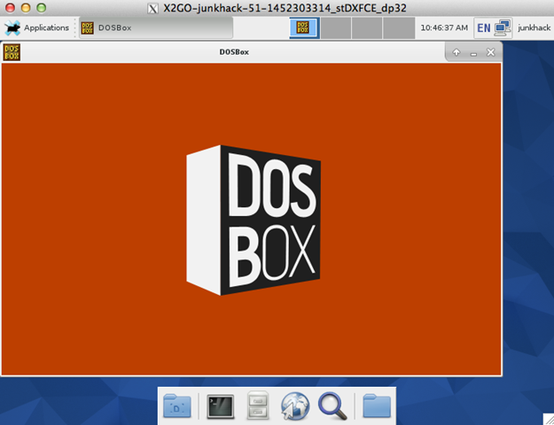

ダイソーのステンレストレイが100円で、結構大きいのでこれでツールワゴンみたいなのを作ろうと思います。
39 x 29cm 深さ18mm くらいのが100円。ちょっとしたワゴンにちょうどいい大きさじゃないでしょうか。
他にも、値段が300円まででいろいろあります。
これは300円ですが、40 x 30cm と大きく深さもあります。
少し小ぶりで 32 x 23cm ですが、深さがあるタイプ。200円
上記の浅いタイプ。
ちょっと失礼して、並べて検討。100円のでとりあえず十分だということで、これを4枚ゲットしました。400円。あと写真にはありませんが、２つ並べてちょうど良さそうな、23 x 16cm の少し深めのものも２つゲット。
以下のようなものを作ろうと思っています。簡易的にプレートをモデリングして、接続パーツやアルミフレームの検討をしています。

ベースのフレームは細い18mm と 28mm のグリーンフレームです。
グリーンフレームは太いので作るか、細いのかで迷っています。コスト重視なら細いものですが。

このステンレストレイは、大きさが 39 x 29cm もあって100円で利益出るんですかね。0.5mm くらいなのでコストは抑えてありそうですが。100円ショップ、ほんと楽しいです。
工具が床に散らばるので、部屋の中にあると便利かなと思いまして。こんな感じで工具がちょうどいい感じに載せれます。
高さは50cm を検討。台車も100円ショップで売っていたのでゲットしてきました。
これは、ダイソーじゃなく100円ショップのSeria（セリア）です。1個あたりの耐荷重は約10kg とあります。４つで40kg なので人が乗る用途でもないので十分でしょう。
ストッパー付きです。100円なのに高機能ですね。ベアリングとかは入っていませんが。
台座は四角なので、ジョイントアダプターを作る必要がありますね。
38mm 角のようです。
材料の概算費用は、ステンレストレイが4枚で400円とフレームがグリーンフレームS だと416円、グリーンフレームだと684円。このくらいだったら、太いほうがいいですかね。タイヤが4個で200円。合計で、1016円か、1284円。あと取っ手のフレームも加算しますので100円か200円くらい高くなりそうです。
もう少し、CAD上でつついて検討したいと思います。高さは、50cm もなくていいのかな。トレイは取り外せるようにするか、固定するかでフレームの構造も決まります。